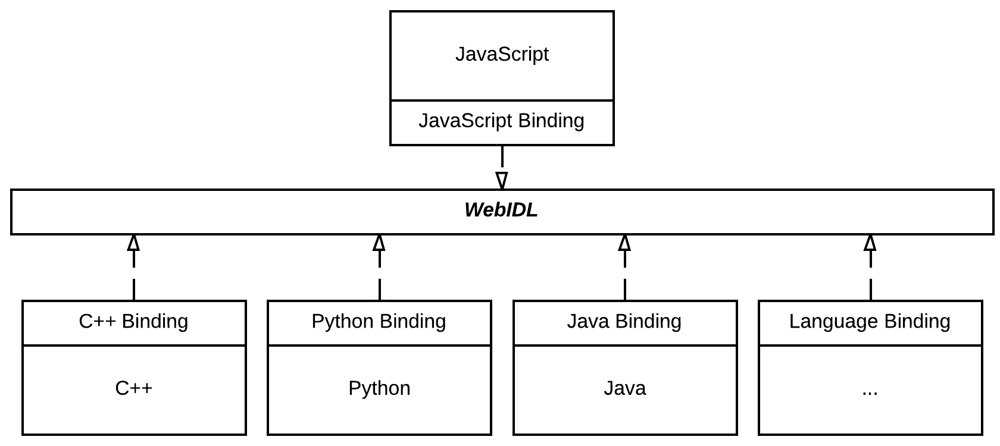
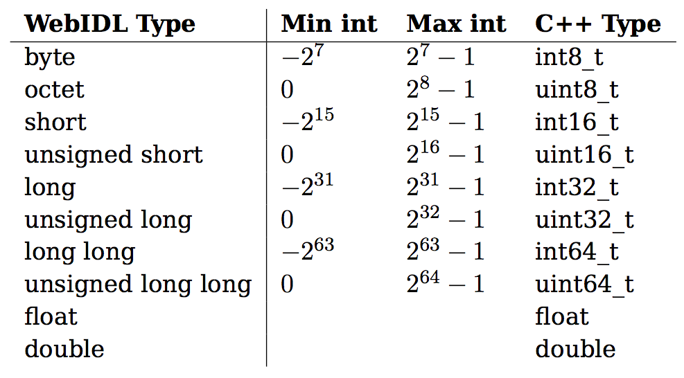

Native Calls
JavaScript - Native Client RPC
Problem 1:
We need native performance
In the browser
Why?
JavaScript is great, but...
- It's interpreted (≈ slow)
- It's single threaded
- It doesn't really have classes
People have tried different things...
- Applets
- Plugins
- Download & install
Applets
Remember this?

Plugins
... and this?

Download & Install
... and this?

Plugins are bad.
Insecure
Independent updates
Need to have them installed
Solution 1:
Emscripten
Compile native code to JavaScript
Solution 2:
Native Client
Run native code in a sandboxed environment
The performance difference
It's a close one, but Native Client wins when we add threads
Emscripten
Native Client
Problem 1 solved:
Use Native Client when it's available
Use Emscripten when it's not
Problem 2:
Writing Native Client apps is hard
because we need to talk to the browser
PostMessage and HandleMessage
embed.postMessage({
command: 'sum',
x: 1,
y: 2
});
embed.addEventListener('message', function(message){
console.log(message);
});
int sum(int x, int y){
return x + y;
}
void HandleMessage(pp::Var message){
// check which function is being called
// get x and y from message
int result = sum(x, y);
pp::Var resultMessage(result);
PostMessage(resultMessage);
}
Solution:
Call C++ functions from JavaScript:
Native Calls
Native Calls
Module.sum(1, 2, function(result){
console.log(result);
});
int sum(int x, int y){
return x + y;
}
Features
pprpcgen: generate C++ and JS stubs- Type checking in both JS and C++
- Results sent in callbacks
- Modules with many interfaces supported
Usage
- Write interface in WebIDL
- Generate C++ and JS stubs
- Write implementation
- Build
Demo
How it works
- RPC Framework
- WebIDL Bindings
- Code Generator
RPC Framework
A layered approach to RPC
- Stub layer
- Runtime layer
- RPC layer
- Transport layer
WebIDL Bindings
JavaScript bindings are easy
Just follow the spec
W3C WebIDL Specification
C++ Bindings require more thought
- Numbers and unsigned numbers
- Strings
- Dictionaries
- Interfaces
Number types
DOMStrings and sequences
std::string vs char[]
std::vector<T> vs T[]
Dictionaries...
In WebIDL
dictionary MyDictionary { DOMString id; double value; }In JavaScript
{"id": "myId", "value": 123.456}In C++
typedef struct { std::string id; double value } MyDictionary;Interfaces in JavaScript
Each interface name points to a map of functions
{
"MyInterface": {
"foo": function(){...},
"bar": function(){...}
},
"SecondInterface": {
"fun": function(){...}
}
}Interfaces in C++
Each function is a class that implements call
class ServerStub_StepScene : public RPCServerStub{
public:
virtual pp::Var call(const pp::VarArray* params, RPCError& error){
// unpack params
// call concrete function
// pack result
}
};Paramater Marshalling in C++
Using WebIDL, we know what paramaters the user expects
Extract parameters recursively using wrapper classes
pp::Var LongType::AsVar(const ValidType<int32_t>& v){
return pp::Var((int) v.getValue());
}
ValidType<int32_t> LongType::Extract(const pp::Var& v){
if(v.is_int()){ // valid
return ValidType<int32_t>((int32_t)v.AsInt());
} else {
return ValidType<int32_t>(); // invalid
}
}Code Generator
Todo